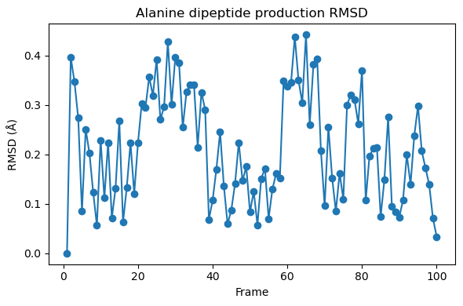
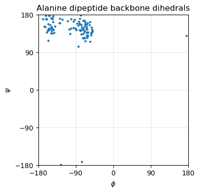

5.4.15. Week 12 Hands-On: Running an AMBER Simulation of Alanine Dipeptide on Pete#
This notebook is a Pete-adapted version of the AMBER alanine dipeptide tutorial:
AMBER tutorial: Simple Simulation of Alanine Dipeptide
https://ambermd.org/tutorials/basic/tutorial0/index.php
5.4.15.1. Goals#
By the end of this hands-on lesson, you should be able to:
create a working directory for Week 12 on Pete
load the AMBER environment
build alanine dipeptide with
tleap(notxleap)generate
parm7andrst7filesprepare AMBER input files for minimization, heating, and production
run minimization and MD
do a small amount of post-processing with
cpptraj
5.4.15.2. Important adaptation for Pete#
The original tutorial creates a generic Tutorial folder.
For this course, start in:
/projects/tia001/$USER/week12
Note: your prompt said
/projects/tia001/$SUER, which appears to be a typo.
In the commands below I use the standard environment variable$USER.
5.4.15.3. Set up your Week 12 working directory on Pete#
Create a week12 directory in our shared project space.
mkdir -p /projects/tia001/$USER/week12
Move into that directory
cd /projects/tia001/$USER/week12
Load the amber module so that your shell has access to the amber executables
module load amber
Check that the amber executables are available
echo $AMBERHOME
which tleap
5.4.15.4. Build alanine dipeptide with tleap#
This follows the AMBER tutorial closely:
load the
ff14SBprotein force fieldbuild alanine dipeptide as
ACE-ALA-NMEload the TIP3P water model
solvate in an octahedral box with a 8 Å buffer
save
parm7andrst7
We will do this starting tleap and then executing a few commands in tleap:
tleap
You should see the following (or comparable) output
-I: Adding /opt/amber/18/amber18/dat/leap/prep to search path.
-I: Adding /opt/amber/18/amber18/dat/leap/lib to search path.
-I: Adding /opt/amber/18/amber18/dat/leap/parm to search path.
-I: Adding /opt/amber/18/amber18/dat/leap/cmd to search path.
Welcome to LEaP!
(no leaprc in search path)
We start by source the parameters (force constants, charges, etc - called a force field) that we will use for this tutorial
> source leaprc.protein.ff14SB
You should see the following output:
----- Source: /opt/amber/18/amber18/dat/leap/cmd/leaprc.protein.ff14SB
----- Source of /opt/amber/18/amber18/dat/leap/cmd/leaprc.protein.ff14SB done
Log file: ./leap.log
Loading parameters: /opt/amber/18/amber18/dat/leap/parm/parm10.dat
Reading title:
PARM99 + frcmod.ff99SB + frcmod.parmbsc0 + OL3 for RNA
Loading parameters: /opt/amber/18/amber18/dat/leap/parm/frcmod.ff14SB
Reading force field modification type file (frcmod)
Reading title:
ff14SB protein backbone and sidechain parameters
Loading library: /opt/amber/18/amber18/dat/leap/lib/amino12.lib
Loading library: /opt/amber/18/amber18/dat/leap/lib/aminoct12.lib
Loading library: /opt/amber/18/amber18/dat/leap/lib/aminont12.lib
Now create a diala object in tleap by using the sequence command to connect the ACE residue to an ALA residue to a NME residue.
> diala = sequence { ACE ALA NME }
Now we will add water around our solute. We start by loading the water parameters
> source leaprc.water.tip3p
Add a box of TIP3P water around the solute with a buffer of alteast 8 Angstroms on all sides of the solute.
> solvatebox diala TIP3PBOX 8.0
Save the amber parameter/topology file (parm7) and input coordinates (rst7):
> saveamberparm diala diala_solv.parm7 diala_solv.rst7
Save a pdb:
> savepdb diala diala_solv.pdb
Quit tleap:
> quit
You should now have the following files in your week12 folder:
diala_solv.parm7 diala_solv.pdb diala_solv.rst7 leap.log
You can also achieve this by copying and pasting the following into the terminal directly (from your week12 folder)
%%bash
cd /projects/tia001/$USER/week12
ls -lh
bash: line 1: cd: /projects/tia001/mmccull/week12: No such file or directory
total 1184
drwxr-xr-x@ 3 mmccull staff 96B Jan 26 21:35 anaconda_projects
drwxr-xr-x
@ 19 mmccull staff 608B Feb 26 13:28 img
-rw-r--r--@ 1 mmccull staff 267B Jan 14 1
3:22 intro.md
-rw-r--r--@ 1 mmccull staff 1.1K Jan 14 13:21 intro.md~
-rw-r-----@ 1 mmccull st
aff 2.2K Apr 2 20:47 phi.dat
-rw-r-----@ 1 mmccull staff 2.2K Apr 2 20:45 psi.dat
-rw-r-----
@ 1 mmccull staff 2.2K Apr 2 20:45 rmsd.dat
-rw-r--r--@ 1 mmccull staff 237K Mar 27 09:43 w
eek11_hf_python_code-Solutions.ipynb
-rw-r--r--@ 1 mmccull staff 87K Mar 27 09:44 week11_python
_classes_and_hf_code.ipynb
-rw-r--r--@ 1 mmccull staff 103K Apr 2 20:53 week12_amber_on_pete_al
anine_dipeptide.ipynb
-rw-r--r--@ 1 mmccull staff 12K Jan 16 10:00 week1_linux_hands_on.ipynb
-
rw-r--r--@ 1 mmccull staff 7.5K Jan 13 20:40 week1_linux_hands_on.ipynb~
-rw-r--r--@ 1 mmccull
staff 38K Jan 22 13:55 week2_python_jupyter_hands_on.ipynb
-rw-r--r--@ 1 mmccull staff 13K
Jan 26 21:43 week3_scp_vi_jupyter_powerups.ipynb
-rw-r--r--@ 1 mmccull staff 20K Feb 9 21:27 w
eek5_hpc_slurm_modules_storage.ipynb
-rw-r--r--@ 1 mmccull staff 6.2K Feb 26 12:10 week6_webmo_h
ands_on.ipynb
-rw-r--r--@ 1 mmccull staff 11K Feb 27 10:19 week7_advanced_webmo_sn2_pes_scan.ip
ynb
-rw-r--r--@ 1 mmccull staff 16K Mar 12 09:10 week9_webmo_molecular_orbitals.ipynb
5.4.15.5. Create AMBER MD input files#
We will create three files:
min.infor minimizationheat.infor heating from 0 K to 300 Kprod_short.infor a short production run suitable for in-class activity
5.4.15.5.1. min.in - Minimization input file#
The first stage of performing a molecular dynamics simulation is to make sure your starting structure has a reasonable potential energy. To achieve this, we need to create a file called min.in to specify to amber that we want to do an energy minimization. Create this file by
vi min.in
then, within vi, enter input mode by typing i. Then copy and past the following information into the file (Then save and quit).
Minimize
&cntrl
imin=1,
ntx=1,
irest=0,
maxcyc=2000,
ncyc=1000,
ntpr=100,
ntwx=0,
cut=8.0,
/
To save and quit, first hit esc to exit input mode, then type :wq and hit enter/return.
If you are unable to get vi to work properly, this can all be achieved by copying and pasting the following into a shell command line and then hitting return.
cat > min.in <<'EOF'
Minimize
&cntrl
imin=1,
ntx=1,
irest=0,
maxcyc=2000,
ncyc=1000,
ntpr=100,
ntwx=0,
cut=8.0,
/
EOF
Make sure you have properly created a file called min.in in your /projects/tia001/$USER/week12 folder.
5.4.15.5.2. heat.in - Heating input file#
The second stage of a typical MD simulation is to heat the system. After minimization, the system is basically at 0K, so we need to heat it to the temperature of interest. We start by creating a heat.in file. This will look similar to the min.in file but with important differences.
vi heat.in
Within vi, enter input mode by typing i then paste the following
Heat
&cntrl
imin=0,
ntx=1,
irest=0,
nstlim=10000,
dt=0.002,
ntf=2,
ntc=2,
tempi=0.0,
temp0=300.0,
ntpr=100,
ntwx=100,
cut=8.0,
ntb=1,
ntp=0,
ntt=3,
gamma_ln=2.0,
nmropt=1,
ig=-1,
/
&wt type='TEMP0', istep1=0, istep2=9000, value1=0.0, value2=300.0 /
&wt type='TEMP0', istep1=9001, istep2=10000, value1=300.0, value2=300.0 /
&wt type='END'
Exit input mode by hitting the esc key and then typing :wq and hitting return.
If you cannot get vi to work, you can also achieve this by putting this all in a command line and hitting return
cat > heat.in <<'EOF'
Heat
&cntrl
imin=0,
ntx=1,
irest=0,
nstlim=10000,
dt=0.002,
ntf=2,
ntc=2,
tempi=0.0,
temp0=300.0,
ntpr=100,
ntwx=100,
cut=8.0,
ntb=1,
ntp=0,
ntt=3,
gamma_ln=2.0,
nmropt=1,
ig=-1,
/
&wt type='TEMP0', istep1=0, istep2=9000, value1=0.0, value2=300.0 /
&wt type='TEMP0', istep1=9001, istep2=10000, value1=300.0, value2=300.0 /
&wt type='END' /
EOF
5.4.15.5.3. prod.in - Production run input file#
The next phase of MD simulation is the production (or sometimes equilibration) run. This will generate the data we will analyze.
Again, vi and put in the following:
vi prod.in
Production
&cntrl
imin=0,
ntx=5,
irest=1,
nstlim=50000,
dt=0.002,
ntf=2,
ntc=2,
temp0=300.0,
ntpr=500,
ntwx=500,
cut=8.0,
ntb=2,
ntp=1,
ntt=3,
barostat=1,
gamma_ln=2.0,
ig=-1,
/
At dt = 0.002 ps, the run length is:
time (ps) = nstlim × 0.002
So:
nstlim = 50000gives 100 psnstlim = 5000000gives 10 ns (tutorial-scale)
5.4.15.6. Review the input files#
cd /projects/tia001/$USER/week12
echo "===== 01_Min.in ====="
cat min.in
echo
echo "===== 02_Heat.in ====="
cat heat.in
echo
echo "===== 03_Prod_short.in ====="
cat prod.in
5.4.15.7. Run minimization#
Create the a job submit script called min.bash or something similar. Put the following into the file using vi (or cat if you need to).
Once you have created min.bash with that info, submit the job:
sbatch min.bash
5.4.15.8. Inspect the minimization output#
You should see the energy decrease during minimization.
5.4.15.9. Run heating#
Create a submit script for the heating step called heat.bash. This submit script reads heat.in and uses the output coordinates from the minimization step (min.ncrst).
Submit the job using the command
sbatch heat.bash
5.4.15.10. Inspect the heating output#
Look for temperature increasing during the run.
5.4.15.11. 10. Run production MD#
Create a job submit script called prod.bash that contains the following
submit the job with the command
sbatch prod.bash
5.4.15.12. 11. Check the production outputs#
5.4.15.13. 14. Basic trajectory analysis with cpptraj#
The original tutorial includes basic post-processing.
Here we will do two simple analyses:
RMSD relative to the first production frame
backbone dihedral angles
phiandpsifor alanine dipeptide
For alanine dipeptide, phi/psi are especially useful because they show the conformational sampling of the molecule.
5.4.15.14. 15. Plot RMSD and the phi/psi time series in Python#
import numpy as np
import matplotlib.pyplot as plt
from pathlib import Path
work = Path(f"/projects/tia001/{Path.home().name}/week12")
rmsd = np.loadtxt("rmsd.dat", comments="#")
phi = np.loadtxt("phi.dat", comments="#")
psi = np.loadtxt("psi.dat", comments="#")
fig = plt.figure(figsize=(6,4))
plt.plot(rmsd[:,0], rmsd[:,1], '-o')
plt.xlabel("Frame")
plt.ylabel("RMSD (Å)")
plt.title("Alanine dipeptide production RMSD")
plt.tight_layout()
plt.show()
# plot phi psi scatter plot
fig, ax = plt.subplots(figsize=(4,4))
ax.scatter(phi[:,1], psi[:,1], s=5)
ax.set_xlabel(r"$\phi$")
ax.set_ylabel(r"$\psi$")
ax.set_title("Alanine dipeptide backbone dihedrals")
# Exact domain
ax.set_xlim(-180, 180)
ax.set_ylim(-180, 180)
# Remove padding
ax.margins(0)
# for tick marks
ax.set_xticks([-180, -90, 0, 90, 180])
ax.set_yticks([-180, -90, 0, 90, 180])
# grid
ax.grid(True, alpha=0.3)
ax.tick_params(labelsize=10)
# THIS is the key fix (stronger than set_aspect alone)
ax.set_box_aspect(1)
plt.show()


5.4.15.15. Short assignment#
Submit answers to the following questions in a word or pdf document to Canvas
What files are produced by
tleap, and what is the role of each?What is the purpose of the minimization stage before heating?
Why do we heat gradually instead of starting immediately at 300 K?
How would you change
nstlimto run a 1 ns simulation atdt = 0.002 ps?Make a plot of RMSD vs trajectory time for your trajectory and describe what you see.
Make a scatter plot of
phiandpsi. Based on thephiandpsiplot, does alanine dipeptide appear to remain in one conformational region or sample multiple regions?